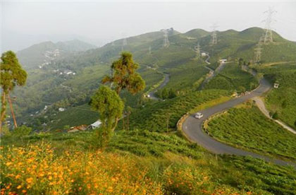
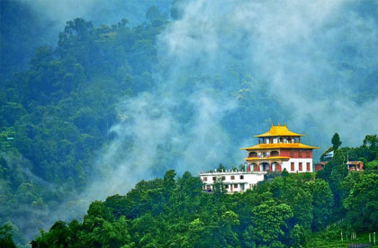

Cum doctus civibus efficiantur in imperdiet deterruisset.
West Sikkim, a very popular tourist destination for the lovers of Mount Kanchenjunga, offers a spectacular view of this majestic mountain. Sharing the international boundary with Nepal, the Region of the west Sikkim is not only famous for the mesmerizing nature’s view but also for the religious activities. The west region of the Sikkim is the home to a few of the oldest Monasteries of the Buddhism faith in the world. The ancient religious importance of the place and the enchanting view of the landscape make this beautiful land a must visit place for the nature lover tourists and spiritual seekers.
The outstanding view of the southeastern side of the Mt. Kangchenjunga is what attracting tourists from various corner of the world to this place. The beautiful natural surroundings with the peaceful and tranquil ambiance are very hypnotizing and refreshing to the mind, body and soul. The oldest monasteries like the Sangachoeling Monasteries and the Pemayansgtse Monasteries are the prime religious places which attract Buddhism followers and other religious followers alike for the immense mental peace. The dense forest and a holy Kchehepalri Lake in between are also the great attractions in the West Sikkim for the tourists and devotees.
Also, the west Sikkim has some pretty popular trekking trails for the adventure-seeking travelers. The Goecha La trek is one of the top treks of the Sikkim state as well as the Barsey Rhododendron Trek and Dzongri Trek are also famous among trekking enthusiasts. The beautiful scenery of pristine mountains and dense array of the varieties of Rhododendron along the trekking route which makes the view enchanting while trekking at such a high altitude in the West Sikkim. You will come across the picturesque view of the Talung Glacier while on the Kasturi Trek which also covers the Goecha La.
Permits:
Yumthang valley is under army control so protected area permit is must to visit this place which you grant from Gangtok Tourism office. There are alternative also through tour operators also you can arrange the permit.
 Here Are The Few Of The Prominent Tourist Destinations In The West Sikkim:
Pelling:
Emerging as the best tourism destination in the Sikkim, the Pelling offers you the breathtaking views of Mt. Kanchenjunga and the other adjacent mountain ranges. The beautiful natural locations of the Pelling are the big attractions for the nature-loving tourists. The tourist spots in the Pelling are easily accessible through the array of well-maintained roads. The town of Pelling is around 125 km from the capital city of Gangtok and around 133 km from the Siliguri, a famous city in West Bengal. Situated at the altitude of around 6800 ft, the Pelling is a perfect gateway for the nature trek with the amazing sight of the numerous waterfalls, quaint villages, pleasing environment, and the good trek routes. Due to the historical importance and rich cultural and traditional values, the Pelling is the most sought-after destination by the tourists with similar interests. Apart from the Khangchendzonga, the town has beautiful mountain peaks such as Koktang, Kabru, Kumbhakarna, Rathong, Dom, Pandim, Jopuno, Simvo, Narsing, Sinoulchu and others. The Pemayangste monastery is around 1 km from the town and the Sanga Choling Monastery is around 40 min further trek, which is one of the oldest monasteries in Sikkim. There are better facilities for tourists in the Pelling than the other destinations in the west Sikkim like the excellent Hotels, Lodges, Restaurants and easy conveyance.
Yuksam:
One of the oldest cities of the Sikkim, the Yuksam was the first capital of the Sikkim kingdom established by the first Chogyal, Phuntsog Namgyal in 1642 AD. The city has witnessed the old history of the Sikkim and the beginning of the monarch in the state. The Yuksam is considered as the sacred place by the people of Sikkim due to its historical and religious values. The city is connected with the Pemayangtse, located at the 40 km distance, through an all-weather road. Yuksam also acts as the base camp for the famous treks of Sikkim, the Mount Khang – Chen – Dzonga trek and the Dzongri trek. Spending few days in the peaceful environment and the picturesque landscape of Yuksam has the very refreshing and healing effect on the mind and body. Visit here if you are seeking a tranquil destination in amidst the pristine mountain, lush greenery and old villages and religious places.
| Sl.No | Number Of Persons | Standard Package Cost | Deluxe Package Cost |
|---|---|---|---|
| 1 | 2 Persons | INR 64044 | INR 68580 |
| 2 | 3 Persons | INR 70956 | INR 77436 |
| 3 | 4 Persons | INR 84348 | INR 93420 |
| 4 | 5 Persons | INR 91260 | INR 102276 |
| 5 | 6 Persons | INR 103572 | INR 117180 |
Here you can find the reliable information on how to plan hassle holiday plant to Sikkim. Sikkim Tourism India put together for tourists relevant details like how to reach Sikkim, best time to visit along with complete information on different means of transportation. You can also explore here the different tourist attractions and spots in Sikkim with the help of our navigation map.